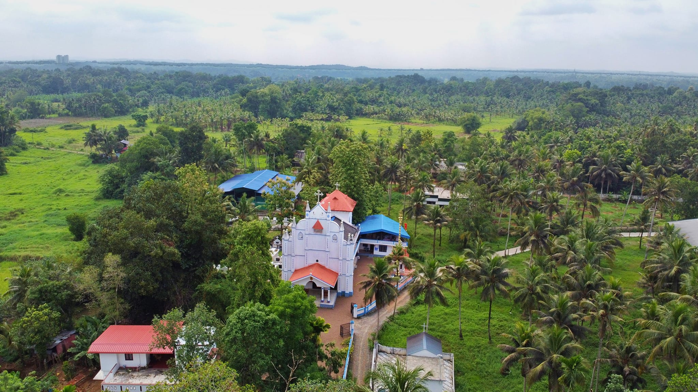

തിരുവല്ലാതാലൂക്കിൽ നെടുമ്പ്രംവില്ലേജിൽ (തിരുവല്ലാ പട്ടണത്തിൽ നിന്നും ഏകദേശം 6 കി. മീ തെക്കുമാറി) കല്ലുങ്കൽ എന്ന ഗ്രാമപ്രദേശത്തെ ദേശവാസികൾ ആരാധനയ്ക്കായി മാർത്തോമ്മാ ശ്ലീഹയാൽ സ്ഥാപിതമായ നിരണം വലിയപള്ളിയെ ആശ്രയിച്ചു പോന്നു. എന്നാൽ ഈ സ്ഥലത്തുതന്നെ ഒരു ആരാധനാലയം വേണമെന്ന ആഗ്രഹത്താൽ 1924-ൽ എം.ഡി.എൽ.പി. സ്കൂളിൽ ദേശവാസികൾ ഒത്തുചേർന്നു പല സ്ഥലനാമവും നിർദ്ദേശിച്ചു എങ്കിലും സ്ഥല നിർണ്ണയത്തെത്തുടർന്നുള്ള തർക്കങ്ങൾ ഏകദേശം ഒരു വർഷക്കാലം നീണ്ടുപോവുകയും അവസാനം മലങ്കരസഭയുടെ പരമാദ്ധ്യക്ഷനായിരുന്ന പ. ബസ്സേലിയോസ് ഗീവറുഗീസ് പ്രഥമൻ കാതോലിക്കാബാവാ തിരുമേനിയുടെ സന്നിധിയിൽ എത്തിച്ചേരുകയും ചെയ്തു. അദ്ദേഹത്തിൻ്റെ നിർദ്ദേശാനുസരണം പ. ബാവാ തിരുമേനി വി. കുർബ്ബാന അർപ്പിക്കുകയും, കുർബ്ബാനമദ്ധ്യേ രണ്ടു സ്ഥലനാമങ്ങൾ എഴുതി നറുക്കിട്ട് എടുക്കുകയും, തുരുത്തിക്കുന്ന് അഥവാ "ത്രിത്വക്കുന്ന്" എന്ന സ്ഥലത്ത് ദേവാലയം പണിയുവാനായി അടിസ്ഥാനശില ആശീർവദിച്ച് അനുഗ്രഹിച്ച് കൊടുത്തയയ്ക്കുകയും ഈ അടിസ്ഥാനശിലമേൽ 1925 ധനുമാസം 25 (ഡിസംബർ 25) ന് താല്ക്കാലിക കെട്ടിടത്തിൽ പ. ഇഗ്നാത്യോസ് പിതാവിൻ്റെ നാമധേയത്തിൽ ആദ്യദേവാലയം ആരംഭം കുറിച്ചു. എന്നാൽ 1930 കർക്കിടകം 31ന് പ്രഥമദേവാലയം അഗ്നിക്ക് ഇരയാവുകയും തുടർന്ന് ഏവരുടെയും ശ്രമഫലമായി മനോഹരമായ ഒരു കൊച്ചുദേവാലയം പടുത്തുയർത്തുകയും 1933-ാമാണ്ടിൽ അന്നത്തെ നിരണം ഭദ്രാസനാധിപനായിരുന്ന അഭിവന്ദ്യ ജോസഫ് മാർ സേവേറിയോസ് തിരുമേനിയാൽ കൂദാശ ചെയ്യപ്പെടുകയും ചെയ്തു. 1977 ൽ ഇടവകയുടെ ജൂബിലി വളരെ ഭംഗിയായി ആഘോഷിക്കുവാൻ് സർവ്വശക്തൻ ഇടയാക്കി ഈ സന്ദർഭത്തിലാണ് ഇടവകയ്ക്ക് മൂന്ന് കുരിശടികൾ ഉണ്ടാകുവാനും ഒരു ഭവനം നിർമ്മിച്ച് നല്കുവാനും സാധിച്ചത്.
1999-ാമാണ്ട് ഈ ഇടവകയെ സംബന്ധിച്ച് വളരെ നിർണ്ണായകമായ ഒരുവർഷമായിരുന്നു. കാലപ്പഴക്കം കൊണ്ട് ജീർണ്ണാവസ്ഥയിലായിരുന്ന ദേവാലയം പൊളിച്ച് പണിയുവാനുള്ള തീരുമാനത്തിന്റെ അടിസ്ഥാനത്തിൽ 1999 സെപ്റ്റംബർ 5-ാം തീയതി വി കുർബ്ബാനയ്ക്കുശേഷം ചെങ്ങന്നൂർ ഭദ്രാസനത്തിൻ്റെ അഭിവന്ദ്യ തോമസ് മാർ അത്താനാസ്യോസ് തിരുമേനി പുതിയ ദേവാലയത്തിന്റെ അടിസ്ഥാനശിലാസ്ഥാപനം നടത്തുകയും 27-12-2000 മലങ്കരസഭയുടെ പരമാദ്ധ്യക്ഷൻ പ ബസ്സേലിയോസ് മാർത്തോമ്മാ മാത്യൂസ് രണ്ടാമൻ കാതോലിക്കാ ബാവയുടെ പ്രധാനകാർമ്മികത്വത്തിൽ പുതിയ ദേവാലയം കൂദാശ ചെയ്ത് സഭയ്ക്കും നാടിനുമായി സമർപ്പിച്ചു.
വർഷങ്ങൾ വീണ്ടും കഴിഞ്ഞുവെങ്കിലും ഇന്നും ഈ ദേവാലയം പുരോഗമനത്തിൻ്റെ പാതയിൽത്തന്നെയാണ്. 2009 മൂന്നുനോമ്പുദിനത്തിൽ ഇടവകയുടെ ഒരു ആഡിറ്റോറിയത്തിന്റെ ശിലാസ്ഥാപനം ഇടവക മെത്രാപ്പോലീത്ത അഭിവന്ദ്യ അത്താനാസ്യോസ് തിരുമേനി നിർവ്വഹിച്ചു. ഇപ്പോൾ ഈ ഇടവകയിൽ 62 ഭവനങ്ങൾ കൂടിവരുന്നു. ഈ ഇടവക പ. സഭയ്ക്കുവേണ്ടി ശുശ്രൂഷ ചെയ്യുവാനായി വെരി റവ. മാത്യൂസ് റമ്പാൻ (പത്തനാപുരം താബോർ ദയറ), റവ. ഫാ. തോമസ് തേക്കിൽ കോറപ്പിസ്ക്കോപ്പ അച്ചൻ, സിസ്റ്റർ മറിയമ്മ (സെൻ്റമേരീസ് കോൺവെൻ്റ്, കോഴിമല), റവ. ഫാ. ജോബി ജോർജ്ജ് എന്നിവരെ ദൈവം ഒരുക്കിത്തന്നതും എടുത്തുപറയേണ്ടതായ ഒന്നാണ്.
ഇത്രത്തോളം ഞങ്ങളെ വഴിനടത്തിയ സർവ്വശക്തനായ ദൈവത്തിൽ ഭാരമേല്പിച്ചുകൊണ്ടും ഇടവകയുടെ കാവൽപിതാവായ പ. ഇഗ്നാത്യോസ് പിതാവിൻ്റെയും ഇൻഡ്യയുടെ അപ്പോസ്തൊലൻ വി. മാർത്തോമ്മാ ശ്ലീഹാ, പരിശുദ്ധന്മാരായ മാർഗ്രിഗോറിയോസ്, മാർ ദീവന്ന്യാസിയോസ് എന്നീ പിതാക്കന്മാരുടെ മദ്ധ്യസ്ഥതയിൽ അഭയപ്പെട്ടുകൊണ്ടും ഈ ചരിത്രം സമർപ്പിച്ചു കൊള്ളുന്നു.
Describe your church's services here. Mention the times of worship, any special events, and how visitors can participate.
ST. IGNATIOUS ORTHODOX CHURCH KALLUMKAL EAST
KALLUMKAL P.O THIRUVALLA, KERALA 689102
Phone Number: (XXX) XXX-XXXX
Email: yourchurch@email.com